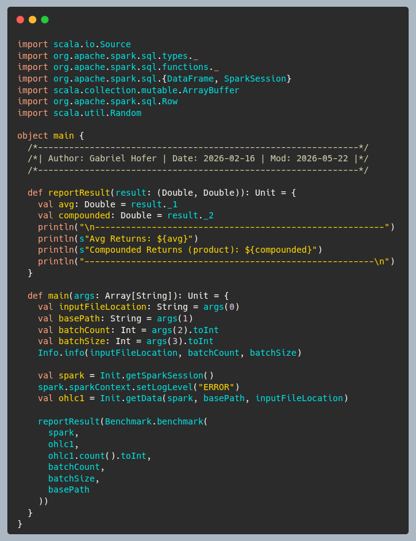
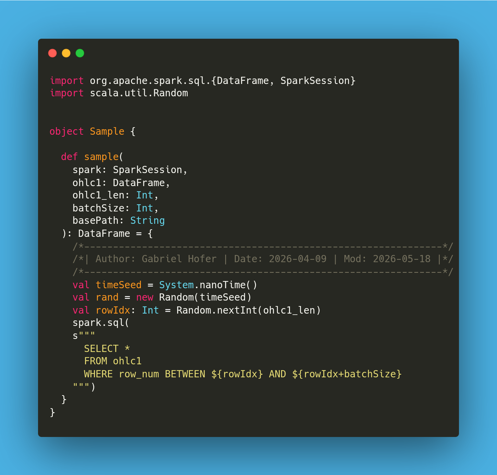
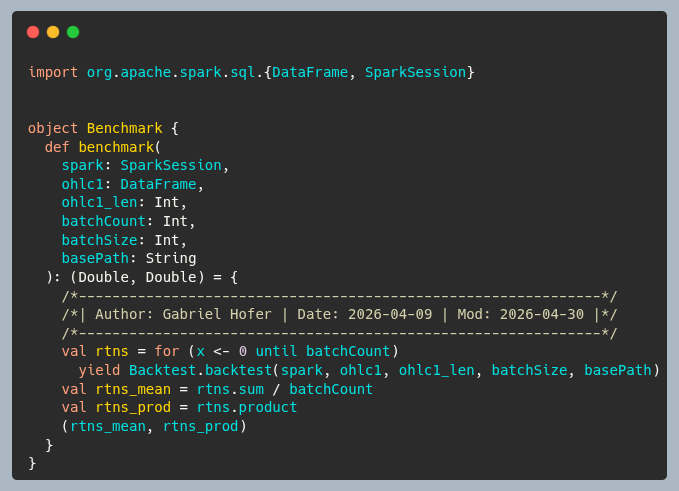
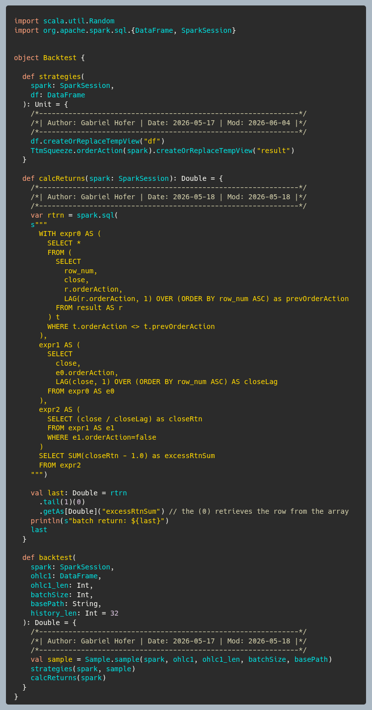

Backtesting System with Apache Spark
Overview
- The purpose of this project was to create a system that could measure the performance of trading
strategies/algorithms.
- This is done by randomly sampling slices of stock price data multiple times.
- For each sample, the trading strategy determines whether to BUY/SELL at the time of each price.
- Therefore, there is a column called "orderAction".
- Then, every time there is a buy followed by an eventual sell, this is called a closed position.
- The closed position has a "return". This is the gist of the backtesting system.
- Finally, all of the "returns" can be averaged and/or compounded.
Command Line Parameters & Usage
BatchCount: number of samples
BatchSize: length of sample slice
function run {
DATA_LOCATION="/home/gabrieldhofer/Desktop/explore-kaggle/data/reversed_AMZN_1min.csv";
sbt "run $DATA_LOCATION $1 $2"
}
$> sbt update
$> sbt compile
$> run
Main
Entry point for the program. Creates the Spark Session and loads data into main.

Sampling
This randomly samples a slice of price data from the entire file.

Benchmark
This is the function that calls the
backtest function
batchCount many times.

Backtest
Calls the strategy on the sample data. Then calculates returns.

Sharpe & Calmar
- https://en.wikipedia.org/wiki/Sharpe_ratio
- https://en.wikipedia.org/wiki/Calmar_ratio
Futre Project: Building a Database
Author: Gabriel Hofer
Date: 2026-04-10
Goals:
- To have fun learning about databases
- To understand databases internals
- To implement clustered indexes with B+ trees and possible other structures
- Implementation should read and write data files and index files.
- To understand and implement query planning
- To understand and implement Atomicity, Consistency, Isolation, Durability
- Implement logical sharding (since we are developing on a single machine)
- Implement Locking:
a. row-level, page-level, table-level
b. s-lock, x-lock, u-lock
Coding Standards:
- Implementation should be in Scala 3, built with SBT
- Only Immutable types: Vector, List, Set, Map, Range
- No for loops, only folds, reduce, and other strictly functional constructs
- The data should always exist in a tree (B+), with a unique key
More Goals:
- Implement method to print the B+ tree, formatted
- Understand how index framentation happens and how to remediate it
- Explore B+ tree alternatives
- Create a "service" - to connect to the database via JDBC
- Understand how column order in the index affects performance
- Learn about covering an index in a query and why it matters
- Database pages: page-id, heap files, tree files, page headers, page layout schemes,
- Think about how to add concurrency features with Scala actors
Online Resources:
Rolling calculations on Spark dataframes
TODO
https://stackoverflow.com/questions/45806194/pyspark-rolling-average-using-timeseries-data
https://spark.apache.org/docs/latest/api/python/reference/pyspark.sql/api/pyspark.sql.functions.stddev.html